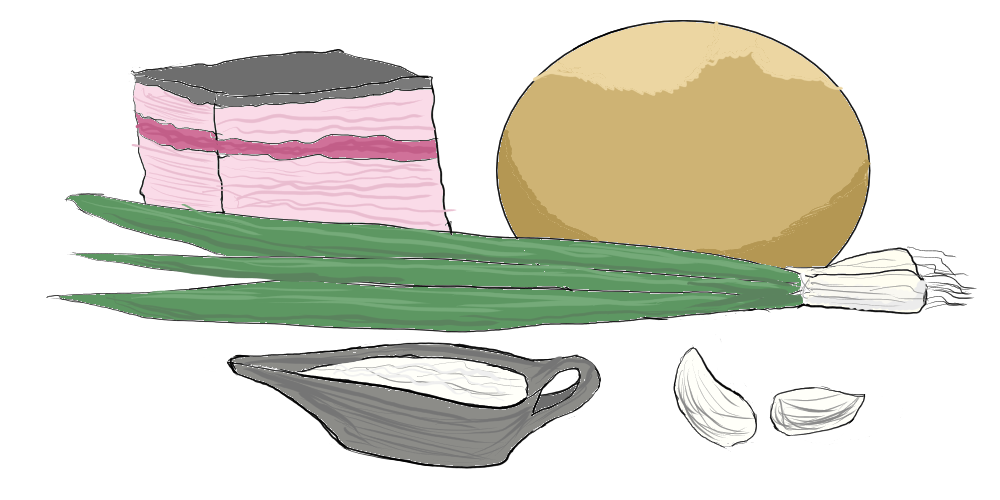

З чим краще смакує борщ
Борщ прийнято подавати обов'язково зі столовою ложкою сметани. Також їсти цю першу страву смачніше з пампушками, а не хлібом. Якщо пампушки з магазину, перед вживанням поставте їх на кілька секунд в мікрохвильовку, щоб створити ефект ніби з печі. Ну і головним доповненням борщу стане сало, бажано солоне, з невеликим м'ясним прошарком, зеленою цибулею та часником.
